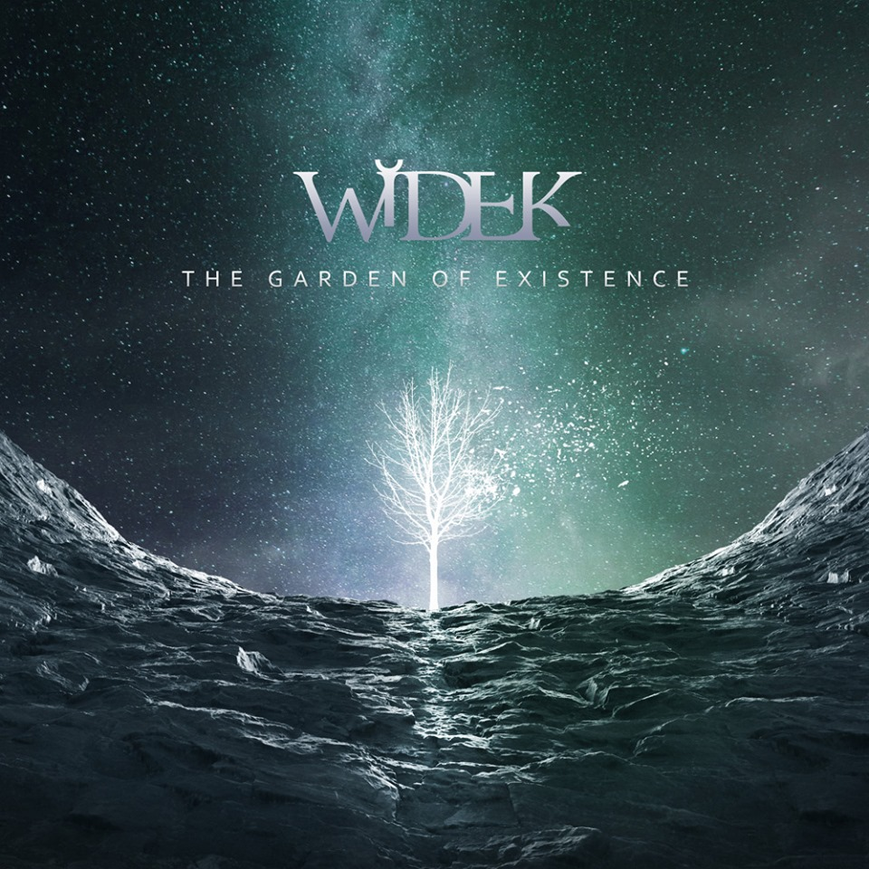

Widek
A djent guitarist
Widek (Maciej Dawidek) is a young guitarist and sound engineer from Poland. He makes instrumental melodic metal varying styles from progressive and ambidjent to metalcore. He does the whole recording, mixing and mastering process by himself in his own studio (Widek Records).